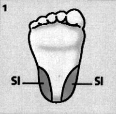
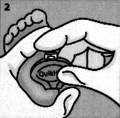
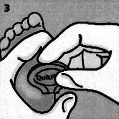
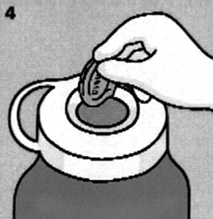

Sistema bd
microtainer®
Para la recolección de sangre capilar
DESCRIPCIÓN: SISTEMA BD MICROTAINER® ofrece la opción de realizar tomas capilares en aquellas poblaciones tradicionalmente difíciles, como: pediatría, geriatría, oncología, politraumatizados, quemados y neonatos.
Incorpora los beneficios del SISTEMA BD VACUTAINER® como: código de color en los tapones, amplia gama de anticoagulantes, diferentes volúmenes de drenado (200-800 µl), relación de muestra-anticoagulante.
Esto nos da no sólo la opción de simplificar la toma, sino de preservar las condiciones reales del paciente, evitando errores en el manejo de muestra y por ende un mejor control de calidad en el proceso de estas muestras tradicionalmente difíciles de manejar.
COMPONENTES DEL SISTEMA: El tubo BD MICROTAINER® con Tapón Microgard™ (tapón de seguridad integrado) es utilizado para la recolección de muestras sanguíneas por medio de una punción capilar. La obtención de la muestra es por gravedad y el sistema se compone de 2 elementos:
1. Tubo de polipropileno con o sin anticoagulante con tapón de seguridad integrado que permite obtener un volumen de muestra establecido.
2. Lanceta Automáticas.
a. Para punción dactilar Lanceta BD MICROTAINER® Contact-Activated (lila, rosa o azul).
b. Para punción en talón de bebé Lanceta BD MICROTAINER® Quikheel (rosa, verde).
CARACTERÍSTICAS:
1. Una sola punción: la lanceta BD MICROTAINER® permite la extracción de varias muestras con una sola punción.
2. Reduce el riesgo de contaminación.
a) Para el flebotomista: la lanceta es retráctil y desechable.
b) Para el paciente: la lanceta es el único componente en contacto con él, es estéril y desechable.
3. Volumen adecuado: el sistema permite obtener pequeños volúmenes de muestra capilar, suficientes para los análisis, evitando las complicaciones de una extracción venosa.
4. Facilidad: el sistema viene listo para usarse, elimina la preparación de material para recolectar muestras.
El tapón recolector incluido en el tubo hace fácil la obtención de la muestra.
5. Confiabilidad: resultados precisos y sin hemólisis.
Marcas de llenado claramente visibles, para asegurar una correcta relación anticoagulante-sangre.
6. Seguridad: la profundidad controlada de la lanceta, evita el riesgo de traumatizar el hueso al proporcionar una profundidad automáticamente y de forma consistente.
INSTRUCCIONES DE USO: Asegúrese que el siguiente material esté listo y a la mano antes de empezar la punción capilar:
a) Tubos de polipropileno BD MICROTAINER®, correctamente identificados.
b) Lancetas estériles.
c) Algodón y/o gasas secas y estériles, vendajes adhesivos y guantes.
d) Alcohol isopropílico al 70%.
e) Papel filtro si la prueba es de Tamiz Neonatal en lugar de Tubos BD MICROTAINER®.
|
1. EN EL TALÓN DEL BEBÉ, identifique el lugar a realizar la incisión (área sombreada) y asegúrese que esté límpia y desinfectada. |
 |
|
2. Posicione la lanceta contra el sitio de insersión con el logo hacia usted. Coloque el área de salida de la navaja en un ángulo de 90° respecto a las áreas permitidas para realizar la incisión. |
 |
|
3. Con el dedo índice active la lanceta presionando el botón blanco. Espere al menos 3 segundos para remover la lanceta. |
 |
|
4. Deseche la lanceta en el colector de punzocortantes. |
 |
|
5a. Si realiza toma de muestra para recolección capilar con Tubo BD Microtainer®, utilice el orden sugerido de toma conforme a CLSI, siguiendo el protocolo de su institución. |
|
|
5b. Si realiza Tamiz Neonatal, recolecte la muestra en papel filtro de acuerdo a lo establecido en la técnica conforme al CLS. |
|


INSTRUCCIONES DE USO (para recolección de sangre capilar con lanceta BD):
Microtainer® Contact-Activated.
|
1. Identifique el lugar a puncionar y asegúrese que esté límpia y desinfectada. |
|
|
2. Gire el dispositivo plástico que asegura la esterilidad de la lanceta. Deséchelo. |
|
|
3. Posicione la lanceta contra el sitio de punción. Sostenga la lanceta entre los dedos. |
|
|
4. Para activar, presione la lanceta contra el sitio de punción. No remueva la lanceta del lugar hasta que escuche el “click” de que ya ha sido activada. |
|
|
5. Deseche la lanceta. |
|
|
6. Proceda a realizar la recolección de la muestra. |
|
PRESENTACIONES:
LANCETAS BD Microtainer® Contact-Activated
para punción capilar
|
Código |
Clave SSA |
Incisión |
Flujo |
Color |
|
366592 |
– |
Profundidad: 1.5 mm |
Bajo |
Lila |
|
366593 |
080.574.0032 |
Profundidad: 1.8 mm |
Medio |
Rosa |
|
366594 |
080.574.0032 |
Profundidad: 2.0 mm |
Abundante |
Azul |
Lancetas bd Microtainer® Quikheel
para tamiz neonatal
|
Código |
Clave SSA |
Incisión |
Flujo |
Color |
|
368100 |
– |
Profundidad: 0.85 mm |
Bajo |
Rosa |
|
368101 |
– |
Profundidad: 1.0 mm |
Alto |
Verde |
Sistema bd Microtainer® /
tubos para recolección capilar
|
Código |
Clave SSA |
Aditivo |
Volumen |
Tapón |
|
365967 |
– |
Gel separador |
400-600 mcl |
Oro Microgard™ |
|
365963 |
080.909.5573 |
Sin aditivo |
250-800 mcl |
Rojo Microgard™ |
|
365985 |
080.909.5615 |
Heparina de litio y gel separador |
400-600 mcl |
Verde Microgard™ |
|
365978 |
– |
Ámbar con gel separador |
400-600 mcl |
Oro Microgard™ |
|
365974 |
– |
EDTA K2 |
250-500 mcl |
Lila Microgard™ |
bd Microtainer® MAP
Tubo para microrrecolección capilar
para procesos automatizados
|
Código |
Clave SSA |
Descripción |
Volumen |
|
363706 |
– |
Tubo para microrrecolección capilar para procesos automatizados. |
250-500 µl |
DATOS COMPLEMENTARIOS: Para mayor información sobre asesoría técnica llamar a:
BECTON DICKINSON DE MÉXICO, S. A. de C. V.
Teléfono: (55) 5999-8200.
Directo: (55) 5999-8360.
® Marca registrada
www.bd.com/mx